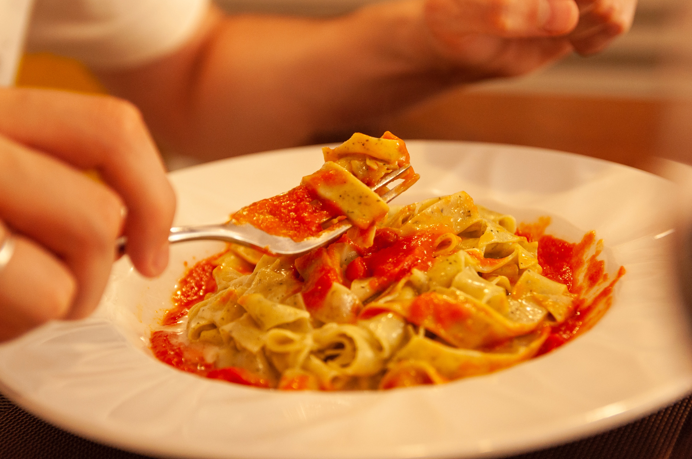

Strona Główna
Kuba Boniecki
Podstawowe informacje
- Stolica: Rzym
- Język: Włoski
- Powierzchnia: 301 338 km²
- Ludność: Około 60 milionów
- Ulubiona potrawa: pizza
Największe miasta
- Rzym
- Miłano
- Neapol
- Turyn
- Florenca
Kuba Boniecki
Wakacje w Italii były marzeniem mojego życia. Kiedy w końcu nadeszła ta chwila, wyruszyłem w podróż do tego uroczego kraju pełnego kultury, historii i przepysznej kuchni. Mój lot do Rzymu był długi, ale kiedy wylądowałem, zrozumiałem, że było warto. Moja przygoda zaczęła się w samym sercu Wiecznego Miasta. Spacerując ulicami Rzymu, czułem się jak w podróży w czasie. Koloseum zachwyciło mnie swoją potęgą, a Forum Romanum ożyło przed moimi oczami. Wieczór spędziłem na Piazza Navona, gdzie delektowałem się pyszną pizzą i winem. Następnego dnia udałem się do Watykanu. Zwiedzałem muzea, a potem wspiąłem się na kopułę Bazyliki św. Piotra, skąd miałem niesamowity widok na całe miasto. W Vatikanie byłam również na audiencji papieża, co było dla mnie niezapomnianym doświadczeniem. Po kilku dniach w Rzymie wyruszyłem na południe do Amalfi. Ta wyprawa była pełna malowniczych widoków. W Amalfi przebywałem w urokliwym pensjonacie na klifie, z widokiem na lazurowe morze. Każdego ranka budziłem się z zapachem kwitnących cytrusów i dźwiękiem fal uderzających o skały. Dni spędzałem na plażach, kąpiąc się w ciepłym morzu i próbując świeżych owoców morza. Wieczory były pełne romantycznych spacerów po wąskich uliczkach miasteczka Amalfi, gdzie odkrywałem urocze kawiarnie i sklepiki z rękodziełem. W trakcie mojego pobytu na Wybrzeżu Amalfi odwiedziłem również Positano, uważane za jedno z najpiękniejszych miejsc na świecie. Spacerując po wąskich schodkach tej urokliwej miejscowości, poczułem się, jakbym wędrował po raju na ziemi. Po zakończeniu pobytu na Wybrzeżu Amalfi udałem się do Florencji, gdzie zwiedzałem galerie sztuki, a przede wszystkim Uffizi, gdzie podziwiałem dzieła takich mistrzów jak Botticelli czy Michelangelo. Spacerując po ulicach miasta, nie mogłem się nadziwić architekturze i historii Florencji. Na koniec wakacji odwiedziłem Wenecję, gdzie pływałem gondolą po weneckich kanałach i podziwiałem piękne mosty i kamienice. Próbowałem także miejscowych specjałów kulinarznych, takich jak risotto al nero di seppia (ryż z czarnym tuszem kałamarniczym) i tiramisu. Kiedy nadszedł czas powrotu, wiedziałem, że moje wakacje we Włoszech były niezapomniane. Wspomnienia z tych miejsc, smaki kuchni włoskiej i przyjaźni, które zawarłem, pozostaną ze mną na zawsze. Italia to kraj pełen historii i magii, który skradł moje serce i zawsze będę tęsknić za jego urokiem.
